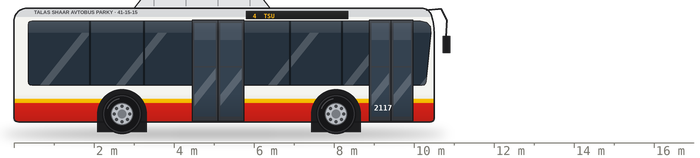
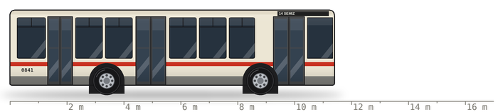
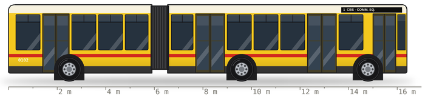
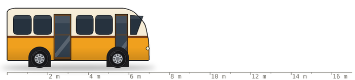
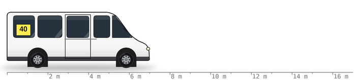
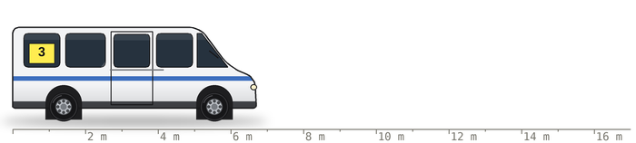
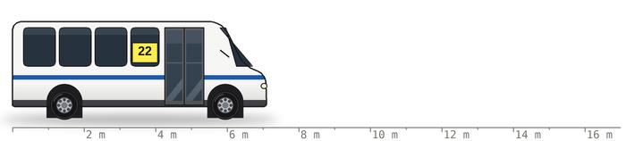
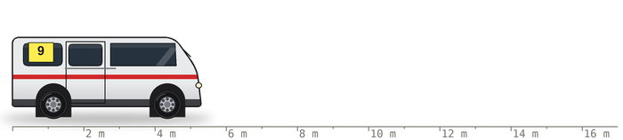
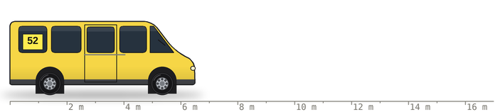
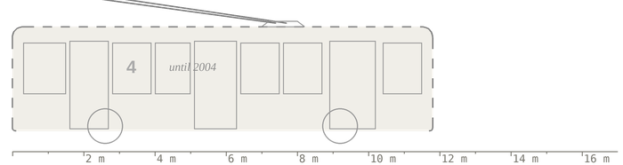

EVERY BUS AND MARSHRUTKA IN TALAS · 2 SOM AT A TIME · SINCE 2025
What carries Talas. The Bus Park has 71 buses: 38 Yutong ZK6108, 21 LiAZ-5256, 9 PAZ-3205 and 3 Ikarus 280. The marshrutkas belong to some twenty carriers, and the register says which type runs on each route. I drew one of each, plus one that isn't there.
all drawings to the same scale (the metres are under each one), right side, facing right: the doors side

The new ones. Bought on the city budget in 2021-2025, the last twelve in June 2025 for routes 4 and 11. Air-conditioning (keep the windows shut, says the Bus Park). The side screen shows the number and the end. The mirrors stick out in front like a snail's eyes, which is why the Bus Park's logo bus has them.

The workhorse of my childhood. The doors hiss. The heater under the seat by the middle door is the best seat in Talas in January. The Bus Park asks you to close the doors behind you on the old LiAZ buses, and you should, because nobody else will.

The legend. Three are left, and one comes out on route 1 in the rush hours. Stand on the turntable in the middle (the round floor in the bellows) and feel the bend at Liberty Boulevard. My white whale for a year: I finally rode it CBS to Communications Square on 14.04.2025.

The small round one. You hear it before you see it. Sometimes it covers a route at night when a big bus is in the workshop, and then 40 people try to fit in a bus for 23.

The real marshrutka. High roof, sliding door, a number card behind the windscreen and a second one in the side window. The 40 runs 12 of them, Cottonwood to the eastern edge, 84 minutes, my longest ride.

The other real marshrutka. Lower than the Sprinter, so tall people bow to everyone when they get in. The 3 from Semiz runs 15 of them, every 7 minutes.

A small bus with a nose, not a van. The 22 runs on these. In Tima's comic (m22) Ermek-baike drives a white Sprinter. In real life the 22 is a County. Tima says it's artistic licence. Ermek-baike says nothing. I accept it.

Short, square, newer. The 9 runs on these, TSU to the Hippodrome. The seats are small and the windows are big, so on the 9 you see the whole city on the way to the races.

Yellow, mostly. The 52 to Semiz runs 9 of them. The engine is loud and the music is louder.

I never saw it: Talas closed its trolleybus in 2004, two years before I was born, and the wires came down in 2005. My father rode the 4 to school. I drew it in dashes from what he told me. Nurzhan still has four trolleybus routes, and I am going to ride them all.
adik · Talas, Station District · stops, routes, times and carriers from the Bus Park site (transport.talas.iradgov.org), checked from a seat by the window. not official. if the 22 does not come, it is not my fault.